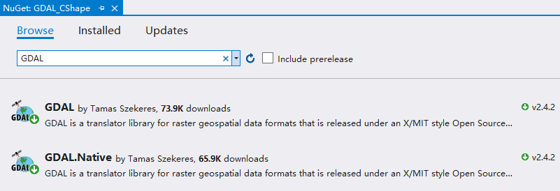
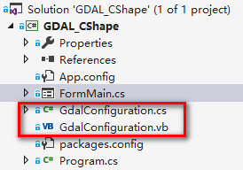

下载的GDAL引用库需包含GDAL和GDAL.Native两个；
GDAL引用库下载完后会在VS项目目录下生成两个文件，GdalConfiguration.cs和GdalConfiguration.vb；
在编码调用GDAL库前需首先调用一下代码：以实现GDAL的代码注册
GdalConfiguration.ConfigureGdal(); GdalConfiguration.ConfigureOgr(); OSGeo.GDAL.Gdal.AllRegister();
GdalConfiguration.ConfigureGdal();和GdalConfiguration.ConfigureOgr();能够解决OSGeo.GDAL.Gdal.AllRegister();时产生的类型初始值设定项引发异常
建议项目存储的路径使用全英文方式，不然在程序运行到注册GDAL引用库的代码时也可能会产生类型初始值设定项引发异常